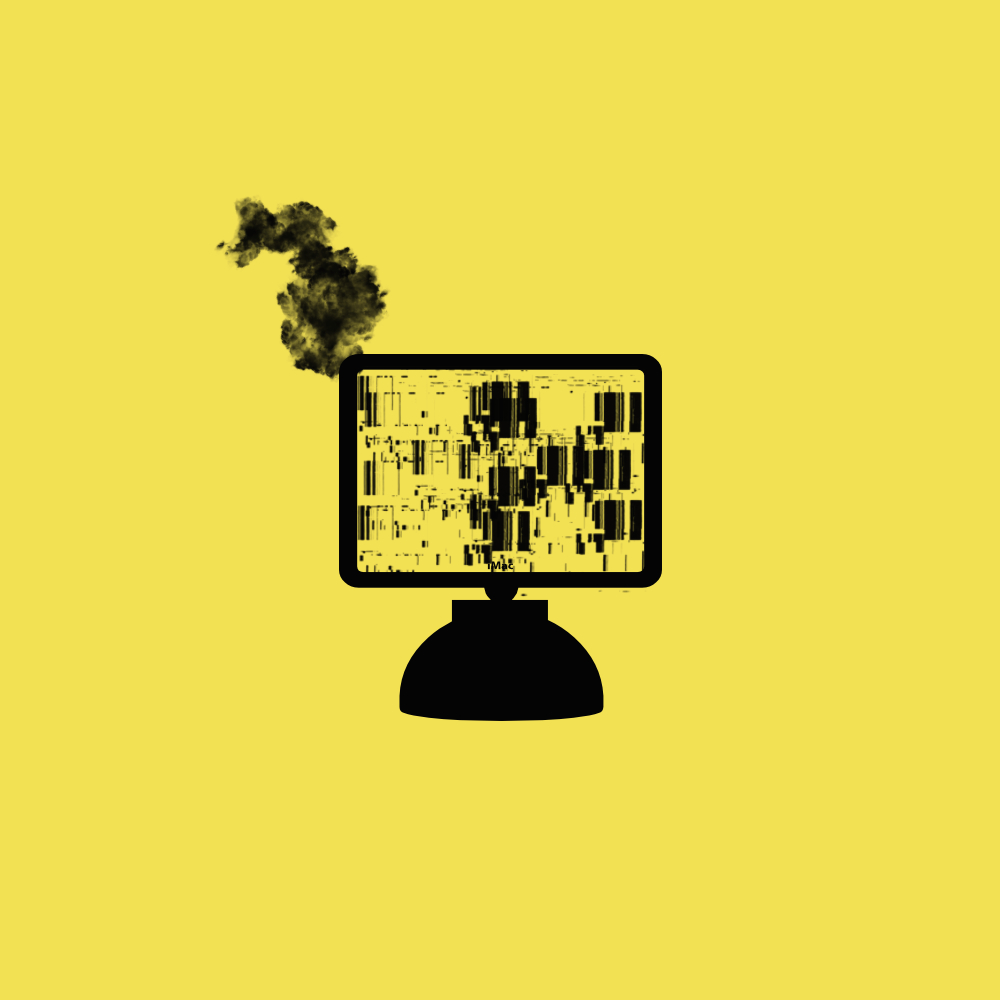

Viruses & Adware
Julia Lynch
 design by ©Julia Lynch
A computer virus is a small software program that spreads from one computer to another and interferes with computer operation. A computer virus might corrupt or delete data on a computer, or use an email to spread the virus to other computers and delete everything on the hard drive.
Malware
Malware is a software that is specifically designed to disrupt, damage, or gain unauthorized access to a computer system. Viruses are the most commonly-known form of malware and potentially the most destructive. They can do anything from erasing the data on you device to hijacking your device to attack other systems, send spam, or host and share illegal content.
Adware
adware is the name given to programs that are designed to display adverisements on your computer, redirect your search requests to advertising websites and collect marketing-type data about you, for example, the types of websites that you visit so that customised adverts can be displayed.
The signs of a virus
Beware of the signs of a potentially malware infested device, such as slower - than usual performance, recent occurrence of pops-ups, missing files, lack of storage, crashes and error messages, email id hacked into and security attacks.
How to treat
Some was to treat malware is to:
- Run security scan
- Disconnect your PC from the internet
- Do not use it until you are ready to clean your PC. this can help prevent the malware from spreading and or leaking your private data
- When you restart, press F8 key repeatedly. This should bring up the advanced boot options menu
- Back up files
- Reset all passwords
resources
- This is an article called malware: viruses, spyware, adware,and other malicious software
- This is an article called: How to prevent malware & adware downloads
- This is an article called: how to remove malware from your windows PC
- [This is an blog called:10 easy steps to clean your infected computer ]